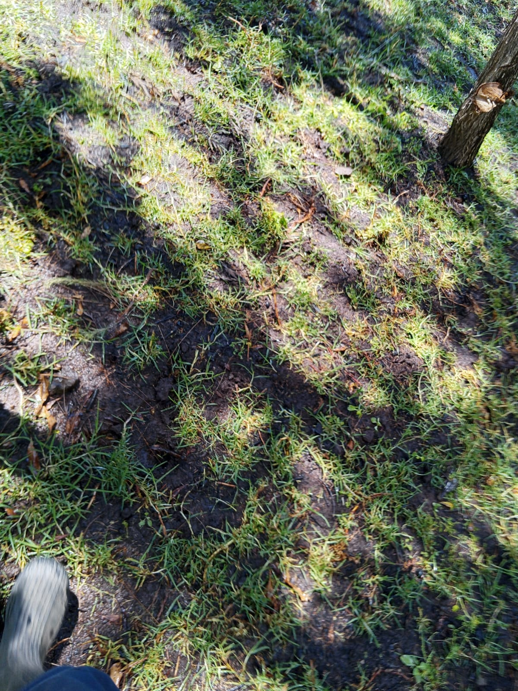

Mucheru World of Golf
Operational shift breakdown and utilization for heavy earthmoving equipment on site:
| Equipment Description | Primary Site Operations | Operating Hours | Billing Rate / Calculation | Total Cost (KES) |
|---|---|---|---|---|
| Backhoe Loader (Front Loader) | Dam 1 residual murram excavation and trailer loading, ground leveling next to Teebox No. 9, Green No. 7 teebox earthmoving, and Green No. 9 rear expansion | 8 hrs 40 mins (8.67 hrs) |
Standard Shift Log | KES 56,355 |
| Consolidated Machinery Billing Total | 8.67 hrs | - | KES 56,355 | |
- Green No. 7 Teebox Creation: Built up, shaped, and graded a brand-new elevated teebox plateau designated for Green No. 7, hauling and compacting earth fill adjacent to the boundary perimeter fence.
- Green No. 9 Spatial Adjustment: Adjusted and expanded the subgrade contours of Green No. 9 to generate additional putting surface room and run-off buffer at the rear of the green.
- Teebox No. 9 Approach Ground Leveling: Deployed the Backhoe Loader and grading crew to flatten, grade, and level the rough ground contours immediately adjacent to Teebox No. 9.
- Green No. 10 Chalk Marking & Drainage Trenching: Surveyed and marked precise white chalk geometric grid lines across Green No. 10 subgrade, followed by full manual pickaxe excavation of herringbone subsurface drainage trenches.
- Dam 1 Residual Murram Removal & Haulage: Utilized the Backhoe Loader (Front Loader) inside Dam 1 basin and along the embankment slopes to scrape up, clear, and load all remaining murram soil into the tractor trailer for haulage.
Key Milestone: Multi-Zone Earthworks & Drainage Infrastructure Progress
Significant construction headway achieved today across Mucheru World of Golf with the successful establishment of Green No. 7 new teebox, precision trenching across the Green No. 10 grid network, rear spatial expansion on Green No. 9, and the clearance of residual murram from Dam 1.

Green No. 7 New Teebox Plateau (Aerial Overview)
High-resolution drone aerial view showing the elevated teebox platform established for Green No. 7 alongside the road and perimeter fence line.

Teebox No. 7 Earth Haulage & Mound Placement
Tractor and red haulage trailer unloading earth fill mounds to build up elevation for the new Green No. 7 teebox.

Teebox No. 7 Subgrade Shaping & Compaction
Graded and leveled teebox plateau for Green No. 7 overlooking the sloped embankment and fairway approach.

Green No. 10 Subsurface Drainage Network (Aerial)
Overhead drone perspective illustrating the completed chalk perimeter contour and excavated herringbone drainage trench channels on Green No. 10.

Green No. 10 Geometric Grid & Perimeter Layout
Ground-level view of the precise chalk alignment lines and radial boundary curve surveyed across Green No. 10 prior to trenching.

Green No. 10 Drainage Trench Channel
Deep linear drainage trench channel excavated across the graded subgrade of Green No. 10 pointing toward red soil staging piles.

Green No. 10 Manual Trench Excavation
Ground labor crew actively excavating the drainage trench grid on Green No. 10 using pickaxes and jembes under cloud cover.

Green No. 10 Sub-Base Materials Staging
Grey hardcore rocks and graded ballast stone stockpiled alongside Green No. 10 ready for drainage pipe and rock bed installation.

Dam 1 Murram Extraction & Trailer Loading
The Backhoe Loader front loader bucket loading excavated murram into the tractor trailer during Dam 1 clearance operations.

Dam 1 Earthmoving & Haulage Fleet
Backhoe Loader coordinating with the tractor and trailer unit to efficiently remove and transport murram out of Dam 1.

Dam 1 Basin Scraping & Subgrade Leveling
Backhoe Loader (XGMA XG765N) actively scraping and smoothing the reservoir floor to clear the final layers of murram.

Dam 1 Embankment Slope Profile
Clean sloped profile of Dam 1 embankment rim following the removal of residual murram deposits.
🎥 Mucheru World of Golf — Daily Operations & Progress Video
Comprehensive field video capturing today's golf course construction progress, including Dam 1 murram clearance, Green No. 10 grid trenching, Green No. 7 teebox creation, and Green No. 9 rear expansion.
🎥 Dam 1 Murram Removal & Loading Operations
On-site field recording capturing the Backhoe Loader actively excavating, scraping, and loading residual murram from the Dam 1 basin into the haulage trailer.
Chaka Farms
Livestock Update: Missing Hen Incident Resolution
Incident Report: The hen that had previously been recovered on August 28th after being missing and trapped for 8 days was unfortunately found dead a day after its recovery. Despite immediate rescue, hydration, and nutritional feeding in isolation, the bird ultimately succumbed to severe physiological exhaustion and dehydration sustained during its prolonged entrapment.
Detailed dairy milking yield recorded strictly in Litres (L), with complete accounting of daily ration deductions and net farm inventory balance:
| Production Stream / Allocation | Morning Yield (L) | Evening Yield (L) | Daily Total Gross (L) | Allocations / Deductions (L) | Net Remaining Balance (L) |
|---|---|---|---|---|---|
| Dairy Cow Milk Production | 4.0 L | 2.0 L | 6.0 L | - | 6.0 L |
| Goat Kids Ration | 0.5 L | 0.5 L | 1.0 L | - 1.0 L | - |
| Staff Allocation (Gladys) | - | - | 0.5 L | - 0.5 L | - |
| Staff Allocation (Maasai) | - | - | 0.5 L | - 0.5 L | - |
| Total Milk Allocations / Disbursements Drawn | - | - 2.0 L | - | ||
| Net Remaining Farm Inventory Balance | - | 4.0 L | |||
- Kennel Sanitation & Hygiene (Overseen by Mwangi): Thorough washing, scrubbing, and sanitization of dog kennel stalls and sleeping quarters.
- Structured On-Leash Exercise (Overseen by Mwangi): Conducted structured leash walking drills across farm grounds for canine discipline and exercise.
- Canine Meal Preparation (Overseen by Mwangi): Cooked and portioned balanced nutritional daily meals for the canine unit.
- Compound & Grounds Upkeep (Overseen by Monica & Margaret): General compound sweeping, courtyard cleaning, garden upkeep, and cleanliness maintenance across the farm living quarters.
Livestock & Facility Operations Summary
Dairy production achieved 6.0 Litres gross yield with 2.0 Litres allocated across goat kids (1.0L) and staff (Gladys 0.5L, Maasai 0.5L), leaving a 4.0 Litres net balance. Full canine care and compound maintenance successfully carried out.
Kabete Residence
- Fireplace Perimeter Wall Clearance: Continued manual clearance and debris removal along the fireplace perimeter retaining wall, extracting salvaged masonry stone blocks and excess earth rubble.
- Outdoor Fireplace Foundation Footing Widening: Excavated and cut away the vertical red earth bank using pickaxes, jembes, and shovels to expand and widen the structural foundation footprint for the outdoor fireplace.
- Cold Room Side Shelves Installation: Fitted and secured laminated wooden side shelving panels and wall-mounted support brackets inside the cold room to expand organized storage space.
- Domestic Pets Feeding & Evening Care: Provided fresh evening meals and attentive care for resident pets including Ajabu the Golden Retriever and resident cats (Reo, Mocha & Aiko).
Site Progress Milestone: Civil Excavation & Interior Fitting
Substantial excavation progress achieved on widening the fireplace foundation and clearing perimeter rubble, alongside advancing the cold room shelving installation and domestic pet care.

Fireplace Foundation Bank Excavation
Laborer utilizing a pickaxe to cut back the vertical red earth bank, widening the structural footing for the outdoor fireplace.

Fireplace Footing Widening in Progress
Excavation team digging and shoveling earth along the fireplace terrace wall to widen the foundation trench.

Fireplace Perimeter Wall Masonry Clearance
Worker clearing and hauling salvaged stone blocks away from the fireplace perimeter retaining wall zone.

Perimeter Wall Rubble & Steel Clearance
Extracted stone masonry rubble and rebar steel rods sorted and cleared along the excavated fireplace perimeter.

Cold Room Side Shelves Installation
Carpenter assembling and securing wall-mounted shelving brackets and wooden shelves inside the cold room.

Cold Room Shelving Materials Prepared
Laminated wooden shelving panels staged ready for final fitting into wall brackets inside the cold room.

Resident Pet Care — Ajabu Having Dinner
Ajabu the Golden Retriever enjoying his evening meal on the tiled corridor at Kabete Residence under Njoki's care.

Resident Pet Care — Cats (Reo, Mocha & Aiko)
Resident cats Reo, Mocha, and Aiko feeding peacefully side by side from their individual stainless steel bowls.
Amani Cottage
- Lawn & Garden Sprinkler Irrigation: Deployed rotary sprinklers and hose lines to water front lawns and landscaped beds; despite limited daytime municipal/site water supply, successfully irrigated half of the compound grounds.
- Compound Litter & Debris Collection: Conducted thorough litter collection, sweeping, and garden cleanup across the cottage perimeter grounds.
- Linen Care & Bed Preparation: Received freshly laundered linen from the laundry service and made beds across all guest bedrooms.
- Comprehensive Housekeeping & Dusting: Completed deep interior cleaning, surface dusting, and floor care across both the upstairs and downstairs living areas.
Cottage Grounds & Interior Presentation
Sprinkler irrigation completed across half the compound despite daytime water supply constraints, with grounds litter fully cleared and complete two-story housekeeping and linen care executed.

Front Lawn Sprinkler Irrigation
Elevated rotary sprinkler actively watering the lush green front lawn and surrounding trees at Amani Cottage.

Irrigation Hose Routing Across Walkway
Green garden hose line routed across natural stone stepping stones to supply water to sprinkler heads across the lawn.

Woodland Perimeter Lawn Irrigation
Rotary sprinkler spraying fine mist across the shaded garden grass perimeter to maintain soil moisture.

Hydrated Turf Grass Condition
Close-up view of freshly irrigated lawn turf showing good soil absorption following targeted watering.